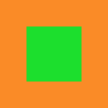
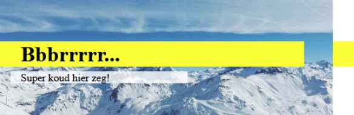

Welke position values zijn er? Leg voor elke position values uit wat het doet. Geef ook aan welke default position waarde elementen hebben die je gebruikt in html.
Positioning allows you to take elements out of the normal document layout flow, and make them behave differently; for example sitting on top of one another, or always remaining in the same place inside the browser viewport.
There are a number of different types of positioning that you can put into effect on HTML elements. To make a specific type of positioning active on an element, we use the position property.
Static: Static positioning is the default that every element gets — it just means "put the element into its normal position in the document layout flow — nothing special to see here."
Relative: Relative positioning is the first position type we'll take a look at. This is very similar to static positioning, except that once the positioned element has taken its place in the normal layout flow, you can then modify its final position, including making it overlap other elements on the page.
Absolute: An absolutely positioned element no longer exists in the normal document layout flow. Instead, it sits on its own layer separate from everything else. This is very useful: it means that we can create isolated UI features that don't interfere with the layout of other elements on the page. For example, popup information boxes and control menus; rollover panels; UI features that can be dragged and dropped anywhere on the page; and so on...
Fixed: This works in exactly the same way as absolute positioning, with one key difference: whereas absolute positioning fixes an element in place relative to its nearest positioned ancestor (the initial containing block if there isn't one), fixed positioning usually fixes an element in place relative to the visible portion of the viewport, except if one of its ancestors is a fixed containing block due to its transform property being different from none. This means that you can create useful UI items that are fixed in place, like persisting navigation menus that are always visible no matter how much the page scrolls.
Sticky: There is another position value available called position: sticky, which is somewhat newer than the others. This is basically a hybrid between relative and fixed position, which allows a positioned element to act like it is relatively positioned until it is scrolled to a certain threshold point (e.g. 10px from the top of the viewport), after which it becomes fixed. This can be used to for example cause a navigation bar to scroll with the page until a certain point, and then stick to the top of the page.
top, bottom, left, and right are used alongside position to specify exactly where to move the positioned element to. To try this out, add the following declarations to the .positioned rule in your CSS:
Source: CSS Positioning (MDN Web Docs)
Zie de onderstaande HTML code.
Hoe zorg je er voor dat het <h1> element altijd 50px van de top en 50px van de rechterkant van het scherm zichtbaar is. Maak het <h1> element rood door een RGB kleurcodering toe te passen.
Source: CSS Absolute positioning (MDN Web Docs)
Zorg er nu voor dat het <h1> element uit de voorgaande opdracht 20px links en 30px naar onder wordt geplaatst, relatief t.o.v. diens normale positie.
Source: CSS Relative positioning (MDN Web Docs)
Zorg er nu voor dat het <h1> element uit opdracht 2 50px links en 100px van de top wordt geplaatst relatief t.o.v. de HTML pagina.
Source: CSS Absolute positioning (MDN Web Docs)
Positioneer het <img> element achter de tekst. Zie voorbeeld hierboven en gebruik onderstaande HTML code. Je mag zelf een eigen image gebruiken.
Source: CSS type selectors (MDN Web Docs)
Maak het onderstaande na door gebruik te maken van relative position. De outer div block is 100px breed en 100px hoog. De inner div block is 50px breed en 50px hoog.
Source: CSS position relative vs position absolute (Web Dev Zone)
Zie de onderstaande image met tekst. Kun jij dit namaken? Gebruik zelf een foto van een zonnige bestemming. Gebruik position, maar je mag geen z-index toepassen.
Source: How to position text over an image (w3schools),
HTML <figure> tag (w3schools)
Maak het onderstaande na. Je mag zelf een image zoeken en gebruiken.
Super koud hier zeg!